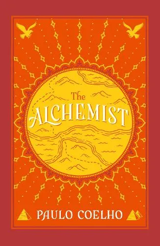
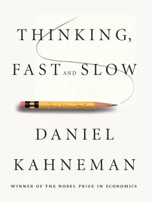

|
The Alchemist
|
- Author Name: Paulo Coelho
- Publication date:1988
- Publisher: HarperTorch
Summary: The Alchemist (Portuguese: O Alquimista) is a novel by Brazilian author
Paulo Coelho
which was first published in 1988. Originally written in Portuguese, it became a widely translated
international
bestseller.The story follows the shepherd boy Santiago in his journey across North Africa to the
Egyptian
pyramids after he dreams of finding a treasure there.
An Andalusian shepherd boy named Santiago dreams of a treasure while in a ruined church. He consults a
Gypsy fortune-teller about the meaning of the recurring dream. The woman interprets it as a prophecy,
telling the boy that he will discover a treasure at the Egyptian pyramids.
After Santiago sets out, he meets an old king Melchizedek, or the king of Salem, who tells him to sell
his sheep so as to travel to Egypt and accomplish his "Personal Legend". Early on his arrival in Africa,
a man who claims to be able to take Santiago to the pyramids instead robs him of the money he had made
from his flock. Santiago then has to work for a crystal merchant to earn enough to continue his journey.
|
|
Thinking Fast and Slow>
|
- Author Name: Daniel Kahneman
- Publication date:2011
- Publisher: Farrar, Straus and Giroux
Summary:
Thinking, Fast and Slow is a 2011 popular science book by psychologist Daniel Kahneman. The book's main
thesis is a differentiation between two modes of thought: "System 1" is fast, instinctive and emotional;
"System 2" is slower, more deliberative, and more logical.
The book delineates rational and non-rational motivations or triggers associated with each type of
thinking process, and how they complement each other, starting with Kahneman's own research on loss
aversion. From framing choices to people's tendency to replace a difficult question with one which is
easy to answer, the book summarizes several decades of research to suggest that people have too much
confidence in human judgment.[1] Kahneman performed his own research, often in collaboration with Amos
Tversky, which enriched his experience to write the book.[2][3] It covers different phases of his
career: his early work concerning cognitive biases, his work on prospect theory and happiness, and with
the Israel Defense Forces.
The book was a New York Times bestseller[4] and was the 2012 winner of the National Academies
Communication Award for best creative work that helps the public understanding of topics in behavioral
science, engineering and medicine.[5] The integrity of some priming studies cited in the book has been
called into question in the midst of the psychological replication crisis.[6]
|
Atomic Habits
|
- Author Name:James Clear
- Publication date:2018
- Publisher: Avery
Summary: Building on exchanges he had with readers of his e-mail list, in 2018
Clear published his book Atomic Habits on how to build tiny, frequent habits that have a large
beneficial and cumulative effect on one's life. According to the intro of his book, he had to build
such habits when rehabilitating from a severe cranial injury that he suffered when playing
baseball.[6]
In his book, he also argues against formulating goals and plans as a large majority of people do not
have trouble designing them, but following them in everyday life. This is reminiscent of the
implementation intentions that emerged in the research activities of German psychologist Peter
Gollwitzer.[7]
Several authors have built upon Atomic Habits by publishing workbooks and implementation guides.[8]
In February 2024 Clear announced he had created a new habits app called Atoms.[9
|